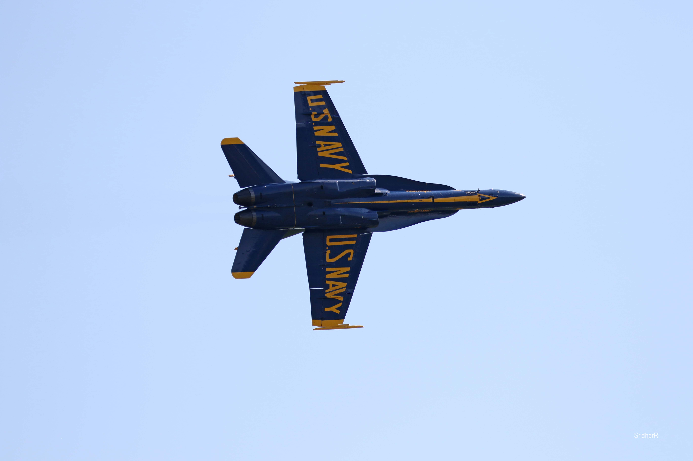
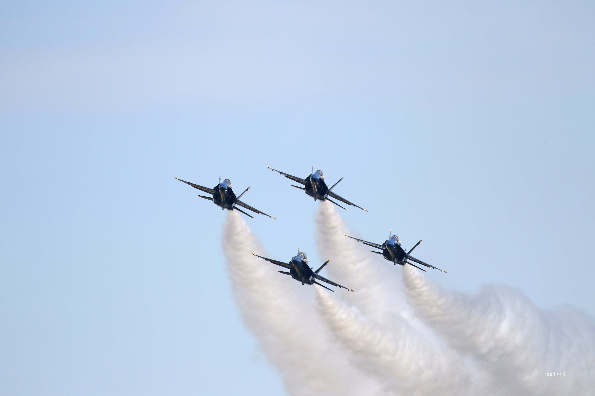
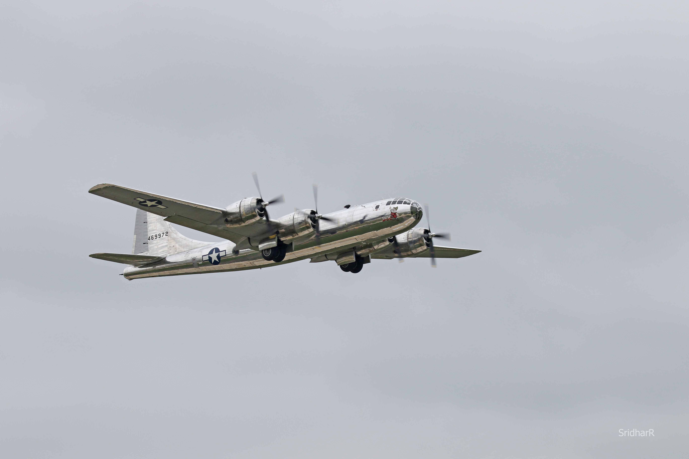
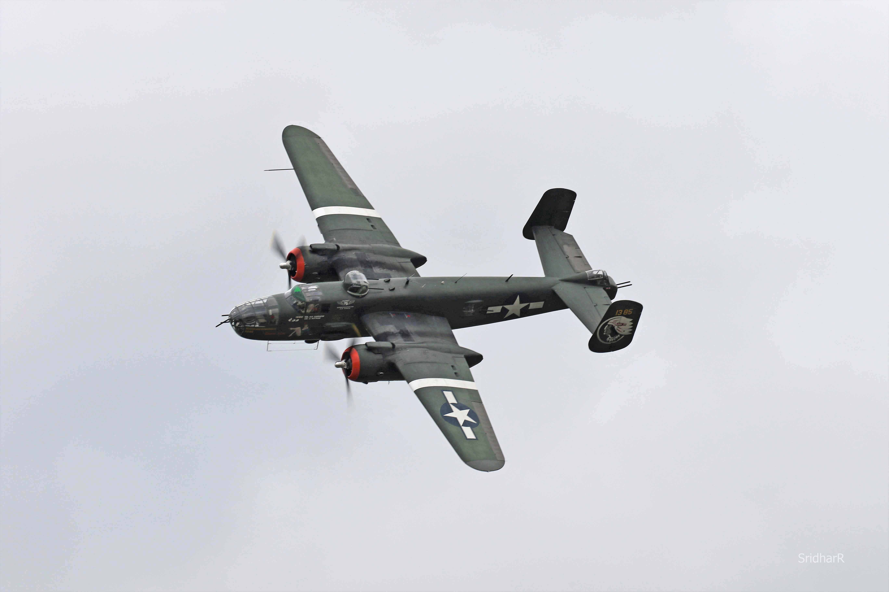
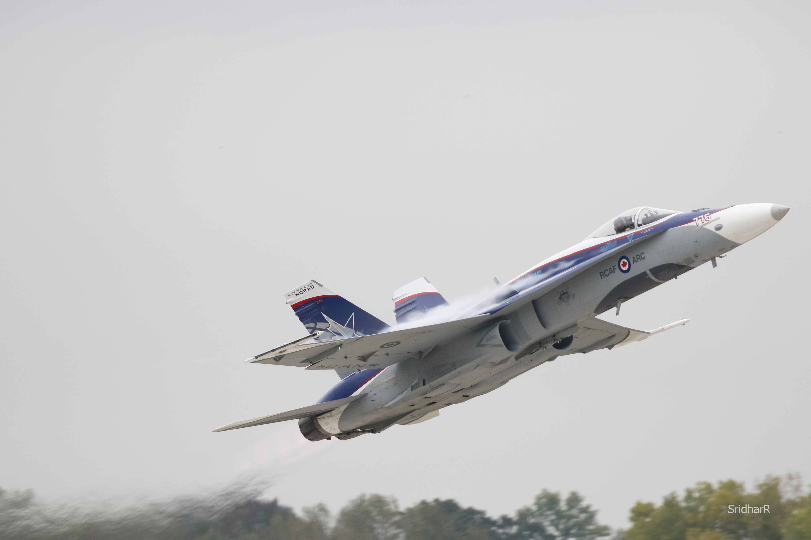
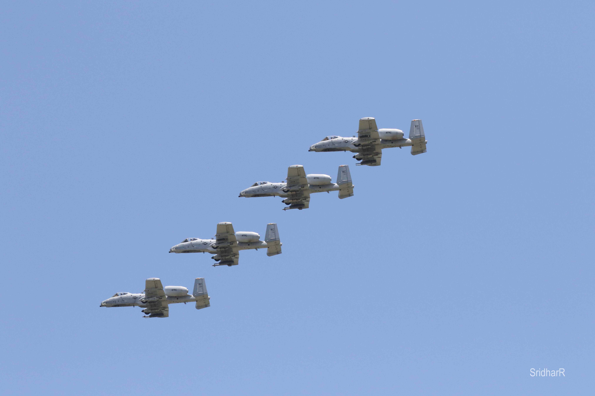
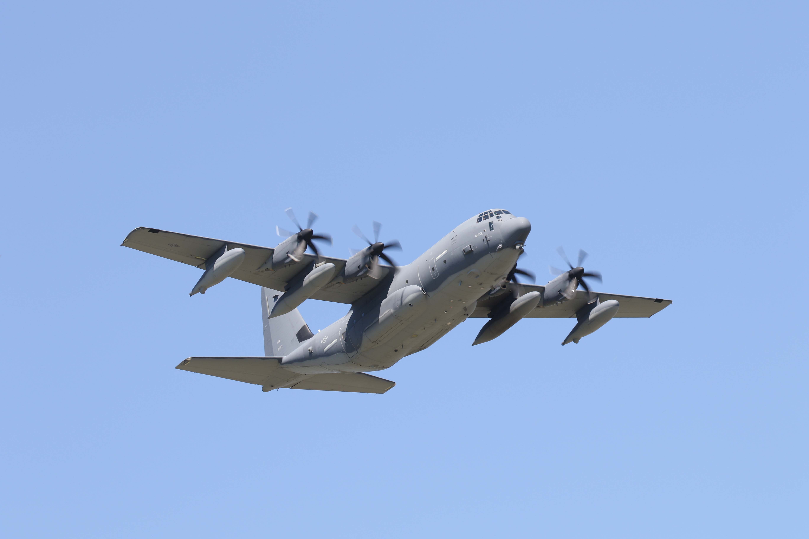
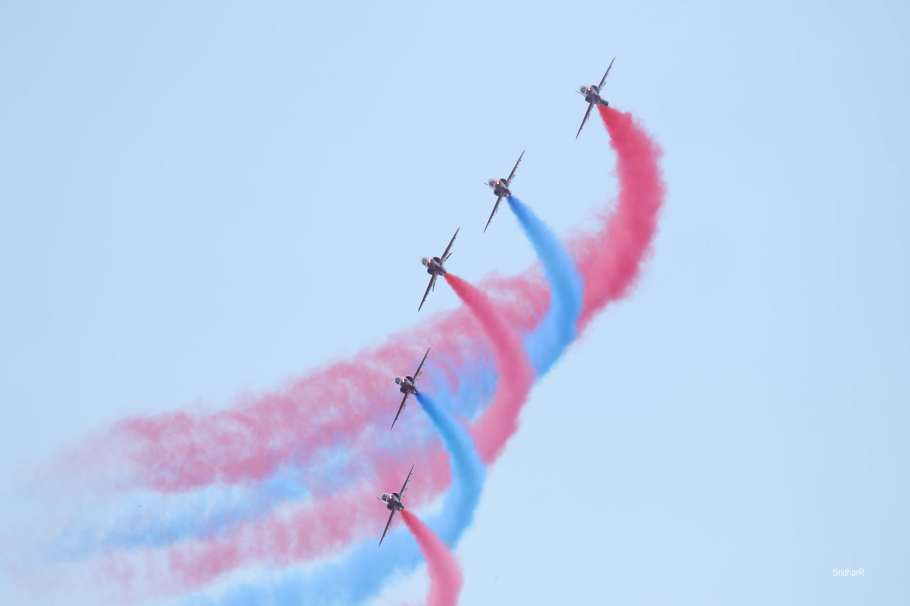
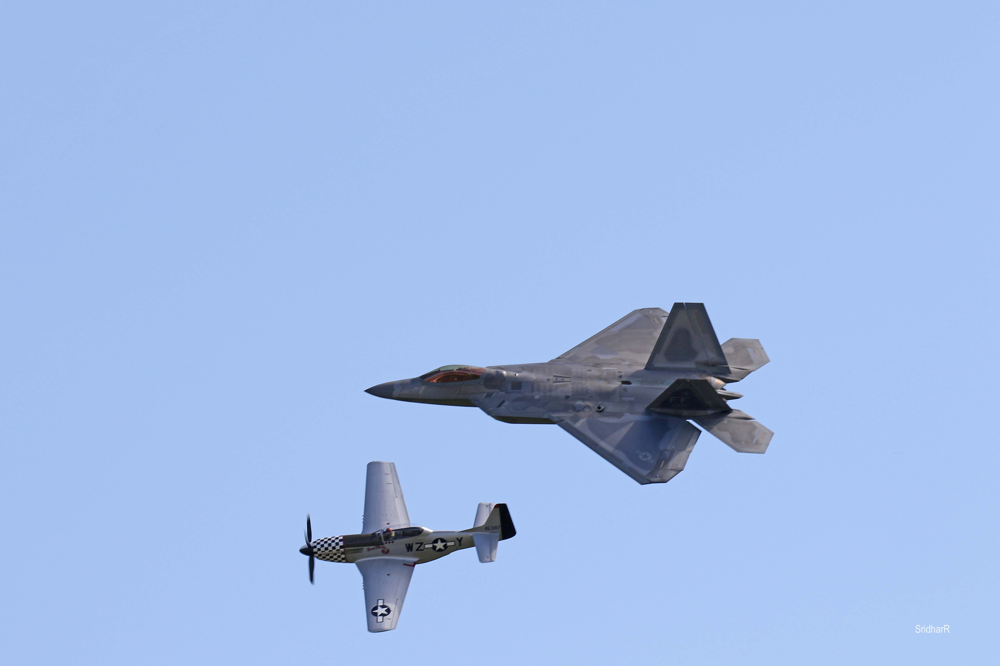

Motion shots, especially aviation shots, were mainly taken on a Canon 7D Mark II. Most motion shots require a greater shutterspeed and lower f-stop. It is important in these shots that there is enough contrast between the foreground and background; sometimes edges of the subject can become blurred with the sky.
Navy Blue Angels, St.Louis Air Show [Canon 7D Mark II, 1/2000 sec. f/5, ISO 250]
Navy Blue Angels formation, St. Louis Air Show [Canon 7D Mark II, 1/2000 sec, f/5.6 ISO 250]
Hercules C-130 (Fat Albert) Blue Angels transport, St Louis Air Show [Canon &D Mark II, 1/320 sec, f/7.1, ISO 100]
US Airforce B-25, St. Louis Air Show [Canon 7D Mark II, 1/250 sec, f/6.3 ISO 125
Canada NORAD F-18 fighter, St. Louis Air Show [Canon 7D Mark II, 1/1000 sec, f/5.6, ISO 1000]
A-10 Warthog, Whiteman AFB Air Show [Canon 7D Mark II, 1/2000 sec, f/11, ISO 1250]
Hercules C-130 (Fat Albert) Blue Angels transport, St Louis Air Show [Canon &D Mark II, 1/320 sec, f/7.1, ISO 100]
UK RAF Red Arrows team, St. Louis Air Show {Canon 7D Mark II, 1/2000 sec, f/5 ISO 200]
USAF F-22 Raptor & P-51 Mustang Heritage flight , St. Louis Air Show [Canon 7D Mark II, 1/250 sec, f/10, ISO 100]